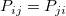
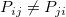

Ergebnisse und Chi-Quadrat der Kreuztabelle interpretieren
crosstab-Results
Kontingenztabelle
Die Kontingenztabelle liefert Informationen zu der Häufigkeitsverteilung der Variablen, einschließlich Anzahlen, Prozentanteile und Residuen. Anzahlen, Prozentanteil der Zeilenanzahl, Prozentanteil der Spaltenanzahl und Prozentanteil der Gesamtanzahl hilft Anwendern dabei, die Stufen gruppenübergreifend zu vergleichen.
Residuen sind Statistiken, mit denen die Unabhängigkeit der Spalten- und Zeilenvariable getestet wird. Je näher der Wert bei Null liegt, desto wahrscheinlicher haben die Spalten- und Zeilenvariable keine Assoziation.
Korrigierte Residuen sind die nützlichsten Residuen zum Vergleichen von Zellen, da sie auf N(0,1) standardisiert sind. Wenn der Wert größer ist als 1,96 oder kleiner als -1,96, ist die beobachtete Anzahl signifikant größer als oder kleiner als erwartet. Je größer der Wert ist, desto wahrscheinlicher ist die Spaltenvariable mit der Zeilenvariable verbunden.
Chi-Quadrat-Tests
Die Chi-Quadrat-Tests bietet Ergebnisse, um die Hypothese zu testen, dass die Zeilen- und Spaltenvariablen unabhängig voneinander sind.
Die Tabelle der Chi-Quadrat-Tests zeigt Chi-Quadrat, Freiheitsgrade (DF) und Wahrsch. > ChiQdr (p-Wert) an.
Wenn Wahrsch. > ChiQdr. kleiner als das Signifikanzniveau ist, können wir für das Signifikanzniveau sagen, dass es keinen signifikanten Nachweis der Assoziation zwischen Zeilen- und Spaltenvariablen gibt. Wenn Wahrsch. > ChiQdr. kleiner als das Signifikanzniveau ist, können wir sagen, dass es bei dem Signifikanzniveau keinen Nachweis der Assoziation zwischen Zeilen- und Spaltenvariablen gibt.
Es sind vier Tests verfügbar.
- Pearsons Chi-Quadrat:
- Dieser Test ist am weitesten verbreitete Chi-Quadrat-Test. Die Test-Statistik wird berechnet, indem die quadrierten Abweichungen zwischen beobachteten und erwarteten Anzahlen geteilt durch erwartete Anzahlen addiert werden. Große Stichproben zeigen in etwa eine Chi-Quadrat-Verteilung. Das Testergebnis wurde mit Bezug auf die Chi-Quadrat-Verteilung erstellt.
- Likelihood-Quotient
- Das Likelihood-Verhältnis baut auf der Wahrscheinlichkeit der Daten unter der Nullhypothese der Unabhängigkeit. Es wird verwendet, um die Güte eines Fits des Modells der Nullhypothese mit dem Alternativmodell zu vergleichen. Die Teststatistik verfügt ebenfalls über eine approximative Chi-Quadrat-Verteilung. Gewöhnlich kommt es zu ähnlichen Ergebnissen wie das Chi-Quadrat nach Pearson.
- Kontinuitätskorrektur
- Eine weitere Bezeichnung hierfür lautet Yates-Korrektur (Yates'sche Kontinuitätskorrektur) und ist in Origin nur für 2*2-Tabellen verfügbar. Wenn die erwartete Anzahl von Beobachtungen in einer Kategorie zu klein ist (z.B. kleiner als 5), dann ist die asymptotische Chi-Quadrat-Verteilung nicht ganz korrekt, den Ergebnissen des Chi-Quadrats nach Pearson und des Likelihood-Verhältnisses ist nicht zu trauen und die Kontinuitätskorrektur wird empfohlen. Sie ähnelt dem Chi-Quadrat nach Pearson, außer dass sie für die Kontinuität der Chi-Quadrat-Verteilung korrigiert wird.
- Lineare Assoziation
- Diese Option ist nur numerische Daten verfügbar. Die Chi-Quadrat-Tests oben berücksichtigen nicht die Ordnung der Zeilen oder Spalten. Die lineare Assoziation dagegen kann dies tun. Sie basiert auf dem Korrelationskoeffizient nach Pearson und verfügt über eine approximative Chi-Quadrat-Verteilung auf 1 df.
| Hinweise: Wenn die erwartete Anzahl von Beobachtungen in einer Kategorie zu klein ist (z.B. kleiner als 5), dann kann den Ergebnissen von Chi-Quadrat nach Pearson und Likelihood-Verhältnis nicht getraut werden. |
Fishers Exakter Test
Wenn die erwartete Anzahl von Beobachtungen in einer Kategorie zu klein ist (z.B. kleiner als 5), dann sind Chi-Quadrat-Tests möglicherweise nicht angemessen und Fishers Exakter Test wird stattdessen empfohlen.
Es stehen drei Tests zur Verfügung, linksseitig, rechtsseitig und beidseitig. Sie ermöglichen es Anwendern zu erkennen, welche Stufenkombination von A*B am wahrscheinlichsten auftreten wird. Einzelheiten können Sie der Spalte Schlussfolgerung entnehmen. (A steht für die Zeilenvariable und B für die Spaltenvariable.)
| Hinweise: Beachten Sie, dass Fishers Exakter Test nur für 2*2-Tabellen verfügbar ist. |
Assoziationsmaße
Bitte lesen Sie die Einführungsseite, um zu erfahren, für welche Situation die Statistiken verwendet werden sollten.
Maße für nominale Variablen
- Phi
- Für eine 2*2-Tabelle ist der Bereich von Phi [-1,1]. Für Tabellen größer als 2*2 ist der Phi-Bereich [0,M]. (M finden Sie auf der Seite des Algorithmus). Ein größerer Wert weist auf die stärkere Assoziation der zwei Variablen hin.
- Kontingenzkoeffizient
- Der Wertebereich ist [0,1]. Ein größerer Wert weist auf die stärkere Assoziation der zwei Variablen hin.
- Cramérs V
- Der Wertebereich reicht von 0 bis 1. Ein größerer Wert weist auf die stärkere Assoziation der zwei Variablen hin.
- Lambda
- Weitere Informationen zu C|R, R|C und Symmetrisch finden Sie in den Hinweisen unten. Ein größerer Wert weist auf die stärkere Assoziation hin.
- Unsicherheitskoeffizient
- Weitere Informationen zu C|R, R|C und Symmetrisch finden Sie in den Hinweisen unten. Ein größerer Wert weist auf die stärkere Assoziation hin.
Hinweise:
- C|R:
- Die Zeilenvariable (R) wird als unabhängige Variable betrachtet, während die Spaltenvariable (C) als abhängige Variable angesehen wird. Der Wert gibt den Prozentanteil an, um den der Fehler reduziert wird, wenn R zum Prognostizieren von C verwendet wird.
- R|C
- Die Spaltenvariable (C) wird als unabhängige Variable betrachtet, während die Zeilenvariable (R) als abhängige Variable angesehen wird. Der Wert gibt den Prozentanteil an, um den der Fehler reduziert wird, wenn C zum Prognostizieren von R verwendet wird.
- Symmetrisch:
- Die Variablen werden nicht als unabhängig und abhängig klassifiziert. Das heißt, diese Option kann nur die Stärke der Assoziation zwischen den zwei Variablen messen, aber sie kann nicht prognostizieren, wie eine Variable eine andere beeinflusst.
|
Maße für ordinale Variablen
- Gamma
- Der Wertebereich reicht von -1 bis +1. Wenn er positiv ist, bedeutet dies, dass die Zunahme einer Variable wahrscheinlich die Zunahme der anderen Variable verursacht. Ein negativer Werte weist dagegen auf eine umgekehrte Beziehung hin. Je näher die Werte bei 0 liegen, desto schwächer ist die Beziehung.
- Kendalls Tau-b und Tau-c
- Diese Werte ähneln Gamma und haben die gleiche Ergebniserklärung.
- Somers D
- Weitere Informationen zu C|R, R|C und Symmetrisch finden Sie in den Hinweisen unten. Ein größerer Wert weist auf die stärkere Assoziation hin.
Hinweise:
- C|R:
- Die Zeilenvariable (R) wird als unabhängige Variable betrachtet, während die Spaltenvariable (C) als abhängige Variable angesehen wird. Der Wert deutet auf die Stärke der Assoziation hin, während C von R abhängt.
- R|C
- Die Spaltenvariable (C) wird als unabhängige Variable betrachtet, während die Zeilenvariable (R) als abhängige Variable angesehen wird. Der Wert deutet deutet auf die Stärke der Assoziation hin, während R von C abhängt.
- Symmetrisch:
- Die Variablen werden nicht als unabhängig und abhängig klassifiziert. Das heißt, diese Option kann nur die Stärke der Assoziation zwischen den zwei Variablen messen, aber sie kann nicht darauf hinweisen, wie eine Variable eine andere beeinflusst.
|
Statistik der Übereinstimmung
Bitte lesen Sie die Einführungsseite, um zu erfahren, für welche Situation die Statistiken verwendet werden sollten.
Kappa-Test
Die Tabelle des Kappa-Tests zeigt den Wert von Kappa, den Standardfehler (SE), die untere Konfidenzgrenze (UEG) und die obere Konfidenzgrenze (OEG), den Z-Wert, Wahrsch. > Z (den p-Wert für einen einseitigen Test für Kappa) und Wahrsch. > |Z| (den p-Wert für einen zweiseitigen Test für Kappa) an.
Anwender können dem Kappa-Wert entnehmen, mit welcher Übereinstimmungsrate zwei Prüfer miteinander übereinstimmen.
-
- <=0: keine Übereinstimmung
- 0 - 0,4: schlechte Übereinstimmung
- 0,4 - 0,59: mittlere Übereinstimmung
- 0,6 - 0,74: gute Übereinstimmung
- > 0,75: sehr gute Übereinstimmung
- 1: vollständige Übereinstimmung
In der Zwischenzeit bietet die Tabelle des Kappa-Tests auch Ergebnisse zum Testen der Hypothese, dass Kappa gleich Null.
-
- Wenn "Wahrsch. > Z" kleiner als das Signifikanzniveau ist, können wir sagen, dass Kappa bei dem Signifikanzniveau signifikant größer als Null ist. Ansonsten können wir sagen, dass Kappa bei dem Signifikanzniveau signifikant gleich Null ist.
- Wenn "Wahrsch. > |Z|" kleiner als das Signifikanzniveau ist, können wir sagen, dass Kappa bei dem Signifikanzniveau signifikant unterschiedlich von Null ist. Ansonsten können wir sagen, dass Kappa bei dem Signifikanzniveau signifikant gleich Null ist.
Bowkers Test
Die Tabelle von Bowkers Test zeigt den Wert von Chi-Quadrat, seinen Freiheitsgrad (DF) und "Wahrsch. > ChiQdr." (p-Wert für Bowkers Test) an. Der Test prüft die Gleichheit des Anteils in allen paarweise verbundenen Zellen, die sich symmetrisch um die Diagonale () herum befinden.
-
- Wenn "Wahrsch. > Chi-Qdr." kleiner als das Signifikanzniveau ist, können wir sagen, dass die Tabelle der Häufigkeitszählung bei dem Signifikanzniveau signifikant asymmetrisch ist, das heißt, . Ansonsten können wir sagen, dass die Tabelle der Häufigkeitszählung bei dem Signifikanzniveau NICHT signifikant asymmetrisch ist, das heißt, .
Quotenverhältnis & Relatives Risiko
Quotenverhältnis und relatives Risiko ist nur für eine 2*2-Tabelle verfügbar. Das Quotenverhältnis misst das Verhältnis der Wahrscheinlichkeit, dass ein Ereignis oder Ergebnis eintritt, zu der Wahrscheinlichkeit, dass das Ereignis nicht eintreten wird. Das relative Risiko misst das Verhältnis der Wahrscheinlichkeit, dass ein Ereignis in einer Gruppe auftritt, zu der Wahrscheinlichkeit, dass das Ereignis in einer Vergleichsgruppe auftritt.
Die Tabelle von Quotenverhältnis und relativem Risiko zeigt den Wert, die untere Konfidenzgrenze (UEG) und die obere Konfidenzgrenze (OEG) an. Das angenommene relative Risiko = RR = P(a|b)/P(a|c). Wenn RR = 1, können wir sagen, dass die Wahrscheinlichkeit, Ergebnis a zu verursachen, die gleiche ist wie in b und c; Wenn RR > 1, können wir sagen, dass die Wahrscheinlichkeit, Ergebnis a zu erhalten, größer in b ist als in c; ansonsten können wir sagen, dass die Wahrscheinlichkeit, Ergebnis a zu erhalten, kleiner in b ist als in c.
CMH-Tabelle
Ergebnisse der Cochran-Mantel-Haenszel-Tests Mit dieser Option wird geprüft, ob es eine Beziehung zwischen der Zeilen- und Spaltenvariable gibt, nachdem die Layervariable kontrolliert wurde.
Konditionaler Unabhängigkeitstest
Diese Option wird mit Hilfe der Mantel-Haenszel-Statistik getestet. Die Mantel-Haenszel-Statistik prüft die Hypothese, dass es keine signifikante Assoziation zwischen der Zeilen- und Spaltenvariable gibt, indem die Layervariable kontrolliert wird. Die Tabelle des bedingten Unabhängigkeitstests zeigt den Wert von Chi-Quadrat, seinen Freiheitsgrad (DF) und "Wahrsch. > ChiQdr." (p-Wert für den Test auf bedingte Unabhängigkeit) an.
-
- Wenn "Wahrsch. > ChiQdr." kleiner ist als das Signifikanzniveau, können wir sagen, dass es bei dem Signifikanzniveau eine signifikante Assoziation zwischen der Zeilen- und Spaltenvariable in mindestens einem Layer gibt. Ansonsten können wir sagen, dass es bei dem Signifikanzniveau keine signifikante Assoziation zwischen der Zeilen- und der Spaltenvariable in einem der Layer gibt.
Homogenitätstests der Quotenverhältnisse
Es wird mit der Breslow-Day-Statistik und Tarones Statistik getestet: Sie testen jeweils die Hypothese, dass das Quotenverhältnis zwischen der Zeilen- und Spaltenvariable auf jeder Stufe der Layervariable gleich ist.
Die Tabelle des Homogenitätstests des Quotenverhältnisses zeigt den Wert von Chi-Quadrat, seinen Freiheitsgrad (DF) und "Wahrsch. > ChiQdr." (p-Wert für Homogenitätstest des Quotenverhältnisses) an. Für Breslow-Day-Statistik und Tarones Statistik:
-
- Wenn "Wahrsch. > ChiQdr." kleiner als das Signifikanzniveau ist, können wir sagen, dass das Quotenverhältnis bei dem Signifikanzniveau unter den Layern signifikant unterschiedlich ist. Anderenfalls können wir sagen, dass das Quotenverhältnis bei dem Signifikanzniveau unter den Layern NICHT signifikant unterschiedlich ist.
Gemeinsames Quotenverhältnis
Das allgemeine Quotenverhältnis der Layervariablen wird durch den Mantel-Haenszel-Schätzwert geschätzt. Die Tabelle des allgemeinen Quotenverhältnisses zeigt die Schätzung des allgemeinen Quotenverhältnisses, "ln(estimate)" (der natürliche Logarithmus des geschätzten allgemeinen Quotenverhältnisses) und der Standardfehler, die untere Konfidenzgrenze (UEG) und obere Konfidenzgrenze (OEG) an.
Mosaikdiagramm
Ein Mosaikdiagramm ist in Rechtecke unterteilt, so dass die Fläche jedes Rechtecks proportional zu den Anteilen der Y-Variable auf jeder Stufe der X-Variable ist.